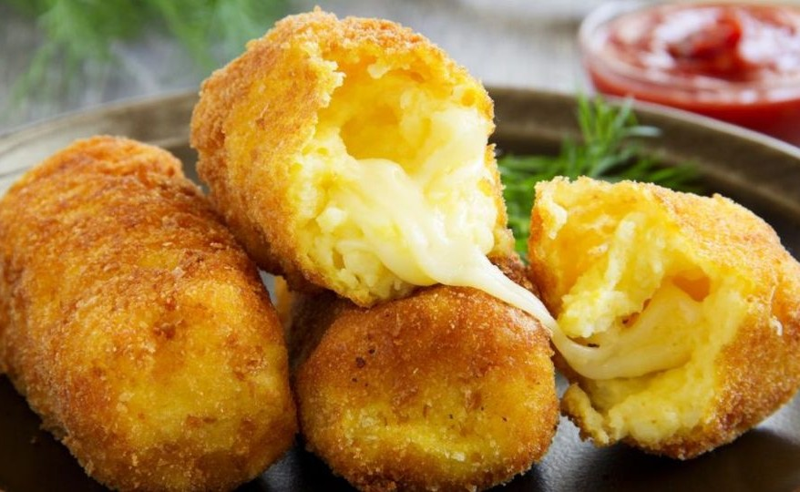

Croquetas de Papa Rellenas

Ingredientes:
1k de papas
1/2 cucharada de sal
Pimienta
Nuez moscada
150g de queso tipo dambo en cubos
2 huevos
Pan rallado
Preparación:
Pelar las papas y ponerlas a hervir con sal.
Cuando las papas estén blandas hacer un puré.
Agregar pimienta y nuez moscada.
Formar las croquetas envolviendo un cubo de queso.
Batir el huevo con una pizaca de sal.
Pasar las croquetas por pan rallado, por huevo batido y nuevamente por pan rallado.
Acomodarlas en una fuente y llevar a horno precalentado a 180° hasta que se doren.